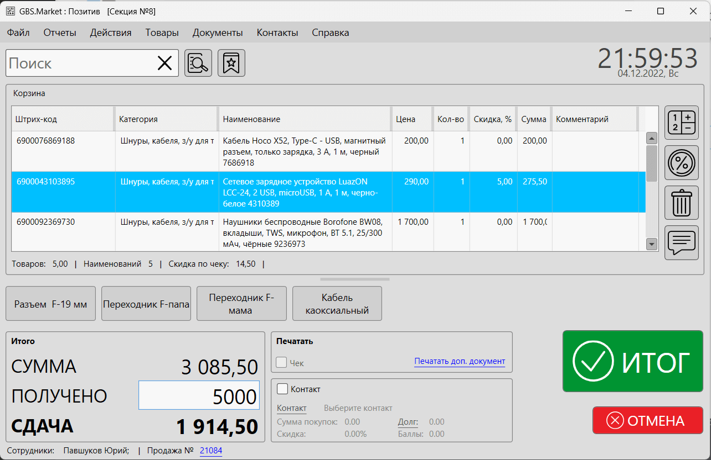
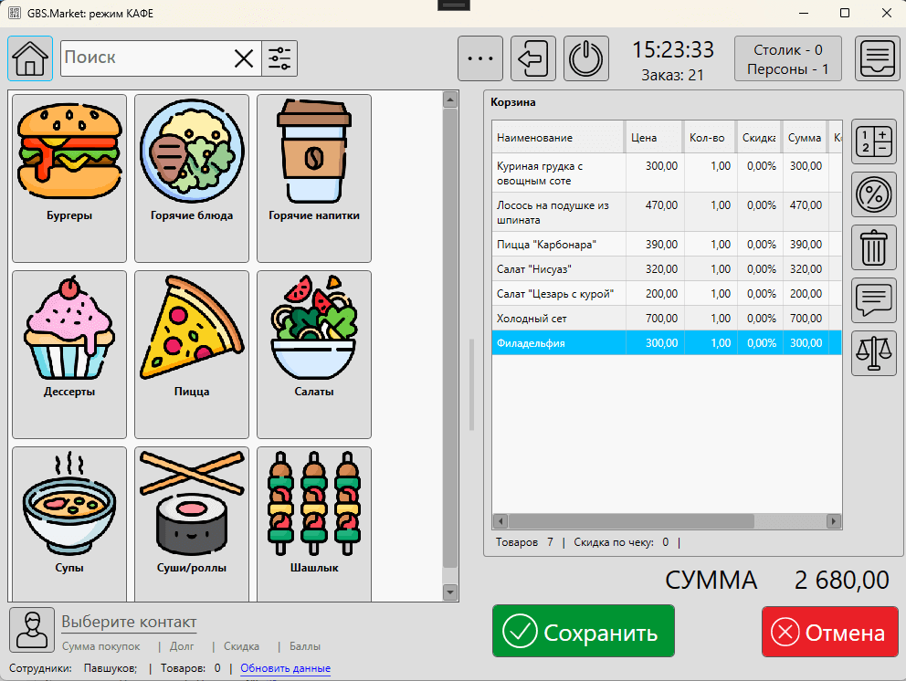
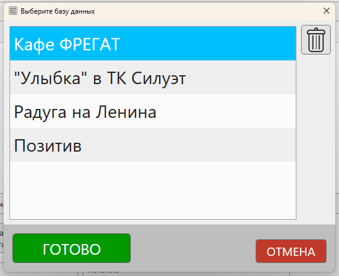

GBS.Market имеет несколько режимов работы. От выбранного режима зависит внешний вид программы и набор доступной функциональности.
Магазин\склад
Данный режим является основным и содержит набор возможностей, предназначенных для использования программы в магазине (рабочее место кассира) и на складе.
Интерфейс (рабочее место кассира) режима "Магазин\склад" выглядит так.
Режим "Магазин\склад" позволяет использовать все основные возможности GBS.Market:
- Формирование списка товаров для продаж и сохранение продажи в БД
- Печать чеков и первичных документов
- Управление товарными остатками и номенклатурой
- Прием накладных и просмотр журнала поступлений
- Построение отчетов и журнала продаж
- Работа с базой покупателей
- Печать ценников и этикеток
- Проведение инвентаризаций
- и многое другое
Кафе
Режим "Кафе" предназначен для использования в организациях общественного питания: кафе, столовых, ресторанах, "кофе на вынос" и т.п.
Данный режим имеет специальный интерфейс (главная форма "Кафе"), который удобно использовать с сенсорными экранами.
Внешний вид интерфейса программы в режиме "Кафе"
Режим "Кафе" имеет такой же набор функциональности, как и режим "Магазин\склад". Из режима "Кафе" можно выйти в "Магазин\склад" и выполнять операции, например, формирование накладной.
Сам режим "Кафе" имеет набор дополнительных возможностей:
- Формирование заказа из меню блюд (товаров)
- Сохранение заказов в статусе "открыт" с возможностью последующего редактирования и закрытия
- Объединение и разделение заказов
- Печать пред. чеков
- Выбор столика и кол-ва персон
Дом\офис
Режим "Дом\офис" предназначен для удаленного контроля за торговыми точками. При запуске программы в таком режиме вы сможете выбрать торговую точку, информацию из которой хотите просмотреть.
Доступен просмотр всей информации из торговой точки, так же, если бы вы находились в магазине.
Полезные материалы
На скриншоте ниже показана форма выбора торговых точек, доступных для просмотра из режима "Дом\офис"
Важно
В режиме "дом/офис" доступны не все возможности для редактирования данных. Список доступных возможностей и ограничений доступен в статье